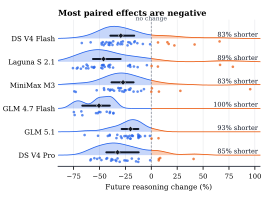
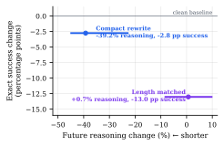

01
Who does the rewrite?
Self and external rewriting were tested. A fine-tuned specialist or cheaper model is a next experiment; a classifier could select blocks or decide when to compact.
REALM @ EMNLP 2026
Rewrite a model’s earlier reasoning into compact state. Then see how much reasoning the same model generates next.
Useful analysis can be expensive to express. This study asks how much of that expression can change without retraining the target or telling it to be brief.
Illustration. Only earlier assistant reasoning changes at the controlled fork.
01 / Measured
paired continuations used less reasoning
tested routes had a negative median change
route-level median reductions
Accepted histories, equal-horizon token comparisons. Acceptance rates differ across routes.

Twenty comparisons grew longer and one was unchanged. The intervention does not shorten every continuation.
02 / Retained coding-agent runs
Six of eight configurations cost less with rewriting included. Only the two MiniMax configurations reduced rewrite-inclusive model-request time.
64.0% of cache-distinct reasoning-history words were removed across the treatment runs. These are history words, not billed input tokens.
Spend includes captured rewriting charges. Nemotron target costs use a common-tariff estimate. All assigned tasks remain, including unsolved and model-limit outcomes.
Controlled exact success was 165/174 with original history and 166/174 with compact history, with changes in both directions across routes. This does not establish quality noninferiority. Deployment scores above also vary by model and compressor.

03 / Design space
Self and external rewriting were tested. A fine-tuned specialist or cheaper model is a next experiment; a classifier could select blocks or decide when to compact.
The deployment compactor sees a reasoning block and its action name. More prior context might improve retention, at an additional input cost.
Rewrite each block, a whole work phase, or an evolving state record. Tool calls and observations stay separate from the reasoning being compacted.
The paper aims at information preservation. Selective forgetting could be more aggressive, with a different risk: discarding something the agent later needs.
After tool arguments are fixed, rewrite an immutable pre-result snapshot while the tool runs. Resume only after both finish. This scheduler is proposed, not benchmarked.
04 / Proposed training
Use a frozen copy of the model with compact history as the teacher. Train the student under its original history to match that continuation behavior.
L = ∑ₜ ∑ᵥ pθ(v | H꜀, y<ₜ) log [pθ(v | H꜀, y<ₜ) / pφ(v | H, y<ₜ)]
The teacher sees compact reasoning; the student sees the original context. Compare their distributions along a shared continuation prefix and backpropagate into φ only. The bars interpolate a toy student distribution to explain the objective; they are not a training run or a measured gain.
Training on the rewritten traces directly is another option, using supervised token loss. A weaker compactor can generate text for the teacher to read; it does not need to share the teacher/student tokenizer.
This proposal needs quality-filtered targets and evaluation for capability retention. Related work: Self-Distillation Enables Continual Learning.
The broader bet
The tested models generated shorter continuations from changed histories without retraining. I suspect compact reasoning is much more widespread, perhaps universal, in current open-weight reasoning models. We should incentivize future generations to use it while keeping their problem-solving ability.